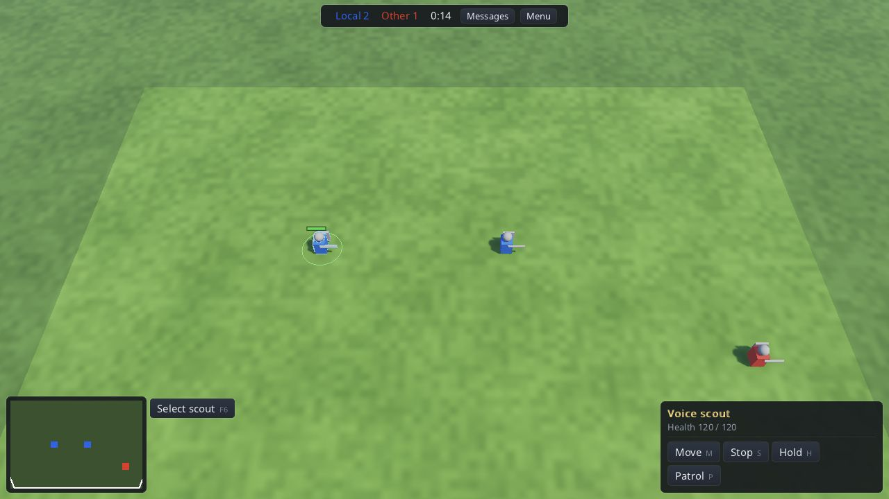

Selection voices in authored order
Repeated clicks cycle voices in order; commands and switching objects restart the sequence.


The demo has two objects with short tones: two normal 440 Hz responses followed by 660 and 880 Hz. Click one object with gaps longer than 0.3 seconds.
Settings use ordinary audio.json data; a zero window retains the sequence across long pauses.
- Verified
- Native mixer output capture confirmed ordering and resets after Stop and switching objects. Three regressions: 119 checks. WebGL scene loading and repeated selection checked.
- Limitations
- Browser audio and physical speaker output were not recorded.